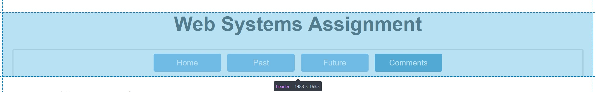

Comments
Personal Design Reflection
Overall, I am proud of the website I have designed as it follows effective and standardised design principles while also reflecting my personal aesthetic taste. The website is clean and minimal while remaining readable and intuitive which can be a difficult balance to find. Further, I challenged myself to thoroughly test and ensure that the website works on different screen sizes which was a nuanced and interesting learning process. I would have preferred to keep the fixed header and sidebar navigation that I initially created the website with, but this caused issues when dealing with dynamic resizing and readability.
Technical
Website Structure
This website was designed in accordance with the UTS Web Assignment Specification.
This website consists of one cascading style sheet (which is linked to the HTML using a <link rel="stylesheet" href="websystems.css"> tag in the HTML files) and four HTML webpages as outlined by the below table:
| File Name | Description |
|---|---|
| index.html | A short introduction to myself and my website |
| past.html | My past experiences with computing so far |
| future.html | What I want to do with computing in the future |
| comments.html | Personal, technical, aesthetic and accessibility comments on the website (Current page) |
| websystems.css | Contains all CSS styles used by the website |
Additionally, there is an images directory containing the images used on this website. The default web page accessed by the web server in the "websystems" directory is "index.html". The file structure is outlined below:

Webpage Structure
HTML tags are used to separate content, organise the page and assign unique CSS styles. This ensures a consistent appearance across webpages and browsers, while also enabling the webpages to be intelligible when the stylesheet is disabled due to the predefined HTML structure. These tags and the overarching webpage structure they create is outlined below:
The content and purpose of the above structural tags are outlined below:
<header>and<nav>TagThe
<header>tag (outlined in the below image) contains the content at the top of the page including the navigation bar defined within the<nav>tag and the main title ("Web Systems Assignment") contained within the<h1>tag. The navigation bar is the horizontal<li>item containing the "Home", "Past", "Future" and "Comments" buttons created using<a>tags that link to the respective HTML file. The header isn't fixed which increases the screen real-estate for main content.The navigation bar was placed inside the header for convention, and to ensure that the
<main>content was successfully hidden behind the fixed header should this feature need to be re-enabled. To achieve this the header has a white background which takes 100% of the page width and is positioned with the CSS codetop: 0; left: 0;in the "websystems.css" file. Within the<nav>tag is a<div id="navContent">tag. This is used to select and restrict the navigation bar's max-width to 800px and min-width to 200px for compatibility with smaller and larger screens.<main>TagThe
<main>tag contains the main content for a given page. This separation enables the necessary horizontal and vertical squeezing and offsets to be applied to the non-fixed content on the page. The topmarginandpaddingof the main content are set so that it is spaced from the header in a manner that is consistent with other spacing on the page (such as the horizontal margin around the navigation list border). Further, the horizontal margin is set dynamically to automatically centre the main content on all screen sizes usingmargin: auto. Themax-widthof the<main>tag is limited to create spacing on the left and right of the main content, which creates visual separation from the header and focuses the reader on the page's content (refer to below images). Additionally, the<main>tag is centred to ensure it is not pushed off to the one side on larger screens, which keeps the pages content in focus for readers. Unlike the header, the main content is left aligned rather than centred for easier reading and visual separation from the header. However, images are centred for a consistent aesthetic and position regardless of image size. Further, images and tables are centred for quick reference and clear visual separation from main text content.Contained within the
<main>tag is the<h1>content heading (in this case "Comments"), the green subheading<h2>and black subheading<h3>tags. Additionally, paragraph<p>, list<li>,<ol>and image<img>tags are used to organise the pages main content. Further, the CSS selector.subContentis used to add left indenting to<div>tags for visual separation (see below image). Additionally,<span>tags are used as an in line container for targeted styling which avoids in line CSS, as in line CSS is poor practice and doesn't guarantee consistency.<footer>TagThe
<footer>tag contains the recurrent content at the bottom of every web page (See below image). This includes copyright, authorship and subject information contained within a<p>tag. A line break<br>is used to separate the subject name "31628 Web Systems" from the university name "University of Technology Sydney". This was used rather than two<p>tags as it keeps the line gap between the subject name and university name smaller to visually associate these two pieces of information and group them separately from the copyright information. The footer content is centred like the header to visually differentiate it from the main content, and a link to the top of the page is included for quick navigation.
CSS
The CSS styling is collated in the "websystems.css" file for reuse which ensures consistency across pages. This was achieved by using .class {}, #id {} and element {} selectors to apply styles onto specific HTML elements. Further, this was done to avoid in-line HTML styling, ultimately removing redundancy and guaranteeing consistency across pages. In general, to follow best practices, an ID selector is used when there will only be ONE element that requires specific CSS styling, otherwise classes are used. Tag selectors are used for universal element formatting, which can then be overwritten (by class or ID selectors) for specific cases due to the cascading nature of CSS. The CSS styling is outlined below:
-
headerelement selector:
Set the header to its position of 0,0 with 100% width and a white background to hide the main content below it when fixed. The text is aligned to centre to avoid needing to set this for all child elements. -
bodyelement selector:
Set the font to "Arial" and dynamically set the font size based off of the window's width (3vw) for compatibility with large and small screen sizes. This style was set in the body to apply to all child elements, reducing redundancy and improving consistency. Line height is set to 130% to increase readability. -
navelement selector:
Set the navigation container to have a 25px border, excluding the bottom to avoid the header's white background covering main content when fixed. 5px padding is set for consistent spacing between the solid light grey border and the gaps between navigation list elements. A border radius of 5px is set to create a modern smooth aesthetic. -
aelement selector:
Set all hyperlinks to have no underline for a minimal design, in keeping with the website's theme. Set hyperlinks in the main content to have a blue (#4A9BDE) colour. A blue colour for hyperlinks follows standard website design practices for an intuitive design. -
a:hoverelement selector:
Set all hyperlinks to have an underline on hover which intuitively indicates a clickable link and provides visual interactivity feedback. -
#navContentID selector:
Set the margin to auto for dynamic screen size centering and set the max/min width to 800/200px respectively for large/small screen size compatibility. -
header ulelement selector:
Set the specific formatting of the header's navigation bar list, which involves removing margin and padding as this is handled by another element. -
header lielement selector:
Set the specific formatting of the header's navigation bar list elements. This involves setting the background colour to (#4A9BDE), setting margin to 5px for visually consistent horizontal and vertical spacing of list elements, setting a border radius of 5px for a curved modern aesthetic in accordance with the website's theme, setting the display to inline-grid for horizontal organisation of the list to maximise usage of horizontal screen space, and setting the list-style-type to none to remove dot points. -
header li a:hoverelement selector:
Set the hyperlinks in the header's navigation bar list to turn grey on hover, and override the text-decoration of standard hyperlinks to be none for this element. The latter removes the underline to differentiate navigation buttons from other hyperlinks. -
.selectedclass selector:
Set the background-colour (to #0072b7) to visually indicate which hyperlink was selected in the navigation bar to end up on the current web page. -
mainelement selector:
Set the main content to have a max width of 1200px and a left, right and bottom margin of auto. This ensures the main content is centred and not too horizontally spread out on large screens. Padding is set to 25px for consistency with other spacing on the page. -
imgelement selector:
Centre images with auto margin and block display for consistency of image placement, enabling quick reference. A solid light grey border is added with radius 5px to visually separate images from the page background and create a smooth modern aesthetic. Max-width is set to 70% to avoid horizontal scrolling on small screens with large images. Similarly, max-height is set to 400px to avoid taking up too much vertical space given the current vertical page layout. -
.paddedBorderclass selector:
Add 10px of padding, used for images that don't look good with tight borders. -
.subContentclass selector:
Add 20px of left padding to create indentation which visually indicates the hierarchical structure of the page. -
.dividerclass selector:
Add a dotted light grey underline border to visually separate elements for easier reading. Further line height is set to normal to override default body text formatting which breaks for this styling. -
footerelement selector:
Set margin to auto and max-width to match that of main content such that the footer aligns with the main content on all screen sizes for consistency. A solid light grey border is used to visually separate the footer from the main content, where a 5px border radius is used for consistent modern styling. Text alignment is centred to match the header and visually separate the footer from main content. Line height and padding is adjusted to group footer content aesthetically and intuitively. -
footer pelement selector:
Set font size to 20px so that the site follows the font-size hierarchy best practices of modern website design, where footer fonts are >= content fonts. Margin is adjusted for symmetrical and consistent styling with header. -
#footerContentID selector:
Set padding to 25px for consistent spacing, most noticeable on mobile. -
.contactBoxclass selector:
Creates a dynamically sized (display:flex, width: fit-content) light grey background wrapper box to highlight contact information, with styling that is consistent with the rest of the pages. -
.contactImgclass selector:
Set the images for contact boxes to be circular using border-radius:50% which intuitively conveys that the image is a profile picture by following standard modern website design. The width, height and margin are set for symmetrical styling with the text. -
.contactBox pclass selector:
Set the font size for text in contact boxes to be 15px with margin top/bottom of 17.5px so that the text aligns symmetrically with the contact image. -
codeelement selector:
Used to differentiate code from plain text in the web page. Done by changing the font-family to "Consolas", setting a light grey background for visual separation, altering the font size to 80% of paragraph text which enables visually appealing padding and a 5px border radius to be added for consistent styling. -
#copyrightSymbolID selector:
Set the colour to red to highlight the copyright of the web page. -
.greenclass selector:
Set the colour to #009e73, this class reduces redundant green styling in the CSS code. -
header h1element selector:
Set a large font size for the header text to visually differentiate it, and set consistent left and right 25px padding for use on small screen sizes. Further line height is set to normal to override default body text formatting which breaks for a large header. -
tableelement selector:
Set overflow-x to auto to avoid whole page horizontal scrolling on small screens caused by the overflow of table content as this doesn't follow the best modern website design practices. Instead a scrollbar is added to the table itself. -
.tableclass selector:
Set width to 90% and margin to auto for consistent centred styling to match that of images. Border collapse is set to remove the default old styling used to separate table cells, which ensures consistent styling with the site's minimal modern theme. -
td, thelement selector:
Set the text alignment of table content to left for consistency with the rest of the main content. Padding is set to 10px for visual clarity and separation from cell borders. The border is set to light grey for consistency. -
thelement selector:
Set the table header to have a background colour of #cc79a7 for visual separation and clarity. -
tr:nth-child(odd)element selector:
Set every odd row in tables to have a background colour of light grey for visual separation and clarity.
Additionally, @media screen queries are utilised to clamp the font-size of the <body> tag based on the width of the browser. It is clamped between 15px and 20px for large/small screen compatibility, as otherwise text content would get too big/small to read respectively. Further, these screen queries are used for optimisation on small screens. This is done by reducing the padding of <ul> and <li> elements on small screens (first image below) compared to large screens (second image below), as screen real-estate is at a premium.

Aesthetics
Design Philosophy and Justification
This site was influenced by modern minimal website and user interface design philosophies. These philosophies involve consistent, practical and simple designs and colour schemes, ultimately to avoid visual clutter which can distract from a viewers reading experience. Hence, this style was employed as it is well suited to supporting the focus of readers on content heavy sites such as this. Linked for reference is an example of a site that demonstrates these design principles, and a site which does not.
Colour
In keeping with the design philosophy colours were used consistently, sparingly and purposefully. Blue was consistently used to represent clickable elements to create an intuition in users of what is clickable. Additionally, this colour choice aligns with modern design standards which allows users to carry forward their intuition from previous experiences with web pages. Contrastingly, green was chosen to highlight major subheadings which allows users to quickly and easily identify where in the document they are located. Light grey was used for dividing lines/borders to visually separate elements for easier and more intuitive reading, without drawing attention to the dividing lines and borders themselves, which would have occurred if a bright colour was chosen. Alternating light grey and white table colouring was used to visually separate the rows for easier reading, and a pink background was used to intuitively and simply differentiate the table header from table content to avoid confusion.
The colour scheme used was inspired by Bang Wong for its relative contrast and simplicity. Additionally, these colours are dark enough to contrast with the light themed white background of the web page for easy reading. The colour scheme is outlined below:
Font
The same font and font style is used throughout all pages of the website for consistency. Additionally, the main font "Arial" was chosen for its simplicity, which is in line with the minimal theme of the website. To clearly differentiate between plain text and code snippets a different font (Consolas) with a different size (80% of Arial font size) was used. Consolas was chosen as it is commonly used in modern web design to represent code. Font sizes were used to highlight the hierarchical organisation of the web page and headings for intuitive navigation. A larger font size indicated a parent heading, so that the users will have their eyes drawn to the most important headings first. Italicised text was avoided as it decreases readability which is against the design philosophy, further it is a less modern approach to drawing attention to text.
Interactivity
Visible feedback is given to users to help convey the Interactivity of the web pages in a minimal way. A darker version of the default element colour is commonly used in modern website design to signify a click. In accordance with this, if an element has been selected a dark blue is used to simply visually convey this difference. This intuitively indicates to the user that their interaction was registered. For the same reasons, hyperlinks add an underline on hover. Further, the navigation buttons change colour on hover to indicate that they are clickable (see below image).
Structure
A non-fixed navbar was used for its practical benefit of providing more vertical screen space for main content, which is necessary in a vertically arranged website with large vertical content like images. Indenting was employed to indicate which content was contained within which parent heading. Content is organised vertically to adequately separate images from text and avoid distracting readers. Similarly, for easier reading, images and tables are centred to distinguish between these elements and text content which is not centred. This ensures consistency of image placement for quick reference. Further, main content text floats left for intuitive reading, while header and footer content is centred for visual separation.
Accessibility
This website has been designed in accordance with the accessibility guidelines outlined by W3C and WebAIM as illustrated below:
Screen Readers
The language has been specified with lang="en" in the HTML code so that screen readers will use the correct pronunciation. Using standardised tags and structure as previously outlined in the Technical section ensures that screen readers can parse the webpage content. For example, the <nav> tag makes it clear to the browser what elements are necessary for page navigation. This also preserves the structure of the webpage even when the style sheet is disabled, which some screen readers utilise. Additionally, alt text has been included for every image so that screen readers can describe the content of the images to visually impaired users.
Structure
A quick link to jump to the top of the page is included in the footer. This removes the need for manual scrolling which is cumbersome on mobile devices or for those with physical disabilities, hence increasing accessibility. Further, to improve readability and hence accessibility on small screens, the padding of <ul> and <li> elements is reduced on small screens where screen real-estate is at a premium. As outlined in Aesthetics, indenting is used for elements below major headings to make it easier for users to parse the structure and content on the page. Further, salient headings due to their large size and contrasting colours are used to aid in this. Additionally, grey dividing lines are used to visually separate images and text for clarity. This increases accessibility to users who are visually impaired or who may struggle to focus when there are complicated layouts and salient images. Similar choices were outlined and justified in the Technical section.
Font
The main font used is "Arial" which was chosen for its easy to read and simple design, even for those with dyslexia. Similarly, italicising/underlining was avoided/minimised as it decreases readability, especially for dyslexic people. Line spacing is an essential component of accessibility guidelines. Line spacing of the text was increasing which improves readability. Font sizing is set relative to the browser window size so that it is readable on all devices, however the font size is clamped between 15px and 20px (using @media screen CSS queries). This ensures that the additional real-estate of larger screen sizes is capitalised on without the font getting too large. Similarly, this ensures the page is accessible to smaller screens, as they can fit an adequate amount of content, without the text becoming too small and unreadable. Moreover, this ensures the web page can accommodate users zooming in and out as they require. Further, other aspects of the page such as the navigation bar, images and tables are designed to scale with, fit to and rearrange on different screen sizes as depicted below:
Colour Contrast
The colour scheme of this website has been intentionally chosen to avoid eye strain by ensuring colours adequately contrast with the white background of the web page. Further, the colour palette is based off of Bang Wong's colour blind friendly colour palette. This colour palette has been tested with success at davidmathlogic.com. The results are below, and demonstrate the sufficient contrast between colours even for colourblind people: